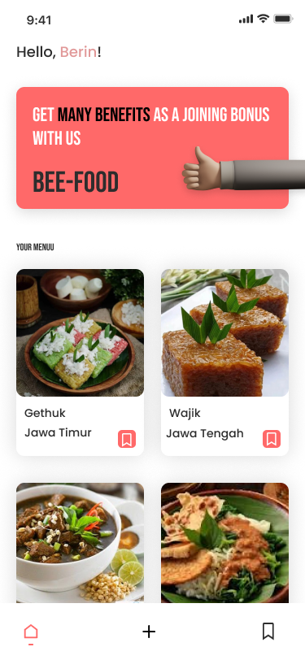
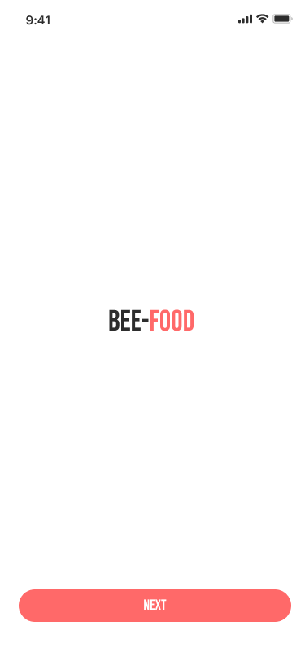

// details project
UI/UX
Modern recipe note application with a simple and user-friendly experience
BeeFood is a recipe note application project that I created during vocational high school.
This application was designed to help users save their favorite recipes, discover random food menus, and add personal recipes through a simple and user-friendly interface.